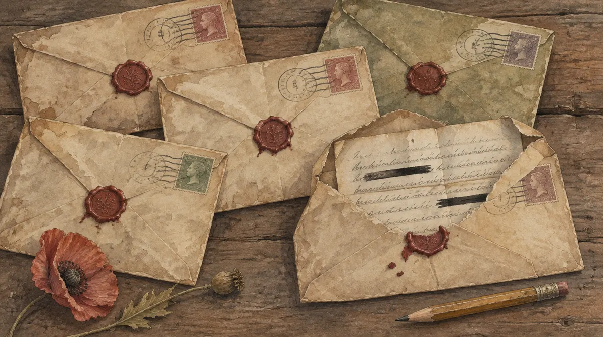
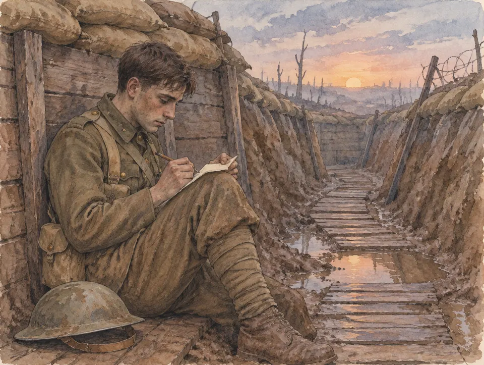

세계사 주제40 · 교과서 192~195쪽
참호에서 온 편지
- 1편지 고르기
- 2읽기
- 3정리
- 41919년 편지
- 5제출

1914~1918, 전쟁터에서 편지가 왔다
전쟁 속 사람들이 쓴 편지 5통이 있어. 군대가 편지를 미리 읽고 검은 먹줄로 지운 곳(검열)도 있어. 우리 모둠이 맡은 편지를 열어 보자.
✉️ 우리 모둠의 편지는?
선생님이 정해 준 편지를 눌러 봉투를 뜯어.

📌 역사 메모 (실제 있었던 일)
이 편지는 실제 사실을 바탕으로 지어낸 «가상의 편지»야.
📮 1919년, 보내지 못한 편지
1919년 6월, 승전국들과 독일이 베르사유 조약을 맺었다는 소식이 들려. (이)가 되어, 이 소식을 들은 날 가족에게 편지를 다시 써 보자.
꼭 넣을 것
- 교과서 용어 2개 이상
- 이 인물이 전쟁 중에 한 일 1가지
- 베르사유 조약으로 만들어진 평화에 대한 내 생각 1문장
📖 교과서 195쪽 다시 보기
전쟁이 끝나고 승전국들은 파리 강화 회의를 열었다(1919). 윌슨은 14개조 원칙을 제안했지만, 영국·프랑스 등은 승전국의 이익을 앞세웠다. 독일은 베르사유 조약으로 식민지를 잃고 막대한 배상금을 물어야 했다. 이렇게 승전국 위주로 만들어진 국제 질서를 베르사유 체제라고 한다. 평화를 지키려고 국제 연맹도 만들었다(1920).
14개조 원칙의 민족 자결주의는 패전국 식민지 일부에만 적용되었다.